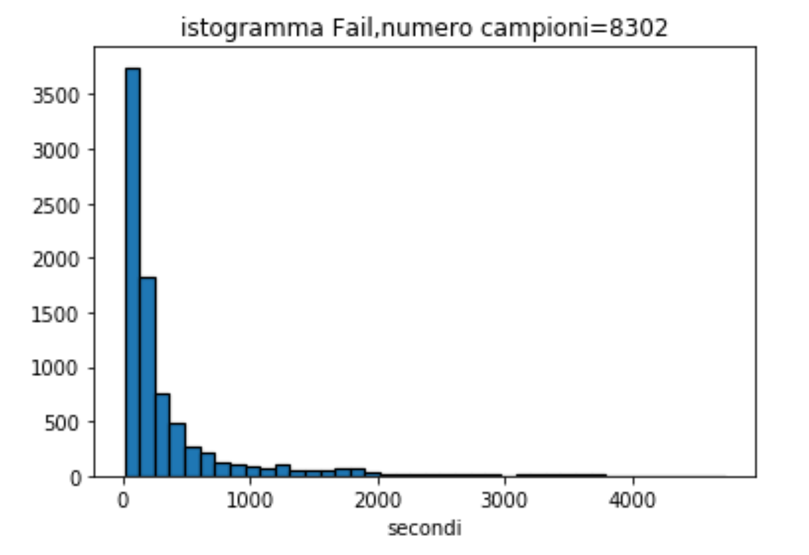

L’attività di tirocinio ha riguardato l’implementazione di un’applicazione di analisi di dati reali di un cluster di elaboratori di esercizio. Il lavoro è stato sviluppato in linguaggio Python usando alcune librerie di Apache Spark sul Notebook Jupyter, un’applicazione web gratuita e open-source. Il tirocinio ha avuto la durata di 275 ore svolto tra il 04/07/2019 al 31/10/2019.
Nella fase iniziale sono stati appresi i concetti base dell’architettura NFV e del 5G. Successivamente si è passati allo studio del Framework di Apache Spark e la gestione dei dati attraverso RDD (Resilient Distribuited Dataset), un'astrazione di programmazione che rappresentauna una raccolta immutabile di oggetti che possono essere suddivisi in un cluster di elaborazione. Infine è stato studiato il linguaggio di programmazione Python che è un linguaggio ad alto livello, orientato agli oggetti e ha tra i principali obbiettivi dinamicità e flessibilità. Uno degli usi più comuni di Python è come strumento di analisi dei dati. Python è stato usato su un’applicazione Web e open-source, ovvero il Notebook Jupyter.
Tutto questo è stato utile per comiciare a studiare un set di dati fornito da Google che descrive la semantica, il formato dei dati e lo schema delle tracce di utilizzo di una cella di calcolo di Google. Una traccia di utilizzo singolo in genere descrive diversi giorni del carico di lavoro su una di queste celle di calcolo. Una traccia è composta da diversi set di dati. Un set di dati contiene una singola tabella, indicizzata da una chiave primaria. Ogni set di dati è impacchettato come un insieme di uno o più file, ciascuno fornito in un formato CSV compresso. Il set di dati comprende varie tabelle:
Il mio studio si è soffermato su Job events table che descrive il lavoro e il suo ciclo di vita.
La tabella degli eventi di lavoro contiene i seguenti campi:
Ogni evento di lavoro ha un valore che rappresenta il tipo di evento:
Per implementare l’applicazione mi sono soffermato sul tipo di evento di ogni singolo lavoro e il loro Timestamp. La prima fase è stata quella di leggere, all’interno della tabella contenuta in ogni file .csv, le colonne relative al Timestamp, JobID ed EventType.
Successivamente ho creato dei vettori relativi allo stato del ciclo di vita di un lavoro, come SUBMIT-SCHEDULE, SCHEDULE-FAIL, SCHEDULE-FINISH, SCHEDULE-LOST, SCHEDULE-EVICT, SCHEDULE-KILL, contenente il tempo in cui ogni singolo ID resta nello stato di pending e running solo se il Timestamp è diverso da zero e se nella colonna EventType sono presenti l’evento 0 che rappresenta SUBMIT, l’evento 1 che rappresenta SCHEDULE e quindi il superamento dello stato pending per poi arrivare in quello di running e infine l’evento 2/3/4/5/6 che indica il modo in cui il lavoro termina.
A questo punto è stato possibile calcolare il numero dei lavori che superano lo stato PENDING, quelli che falliscono per un qualsiasi motivo, quelli che finiscono regolarmente e i loro rispettivi tempi medi in cui ciò accade.
In seguito ho graficato l’istogramma di ogni singolo vettore, la loro CDF e PDF empirica che ti consente di tracciare una caratteristica dei dati e di vedere la funzione come è distribuita nel set di dati.
Alcuni esempi di instogrammi:
Infine, dalla visione dell’istogramma dei vettori, ho notato che avevano un andamento esponenziale e così, grazie al test di Kolmogorov-Smirnov che verifica la forma delle distribuzioni campionarie e può essere utilizzato per confrontare un campione con una distribuzione di riferimento e utilizzando le opportune librerie che Python mette a disposizione, ho confrontato i vettori calcolati con una distribuzione esponenziale. I risultati ottenuti da questo test è che i vettori hanno quasi lo stesso andamento dell’esponenziale ma è stata rifiutata l'ipotesi che provengano dalla stessa distribuzione. In seguito sono riportati due esempi di grafici del vettore dei fallimenti con il calcolo della CDF e la PDF con l’istogramma del vettore.